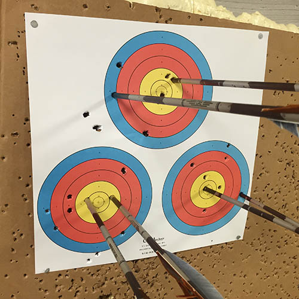

Devin Mandelbaum was born and raised in New York City, a city in which he still lives, works, and roots for (almost) all of the local sports teams.
Devin enjoys baking, and especially enjoys trying out new recipes. He has a favored recipe source, but who knows what it is?
Devin is an amateur archer, and has been shooting for more years than he'd like to think about. He shoots with one recurve and one compound bow. The shots shown above are with the recurve. If you don't know what this means, you should ask him about it.
As you can see above, Devin enjoys wearing bow ties. He has a range of fancy and more whimsical ties (and also regular ties, but they're less fun). He has a very strong preference for true bow ties that one must tie oneself over clip-ons.